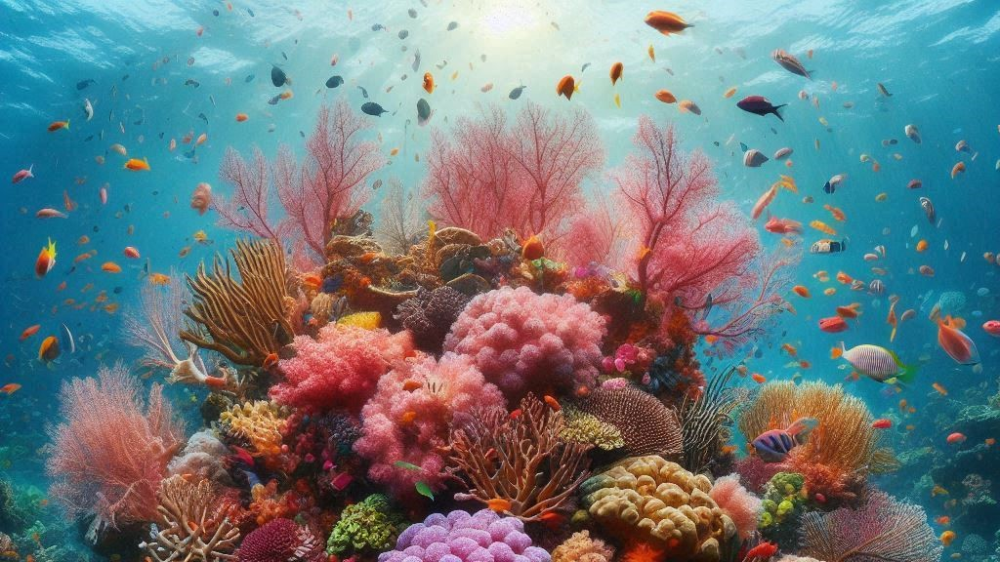
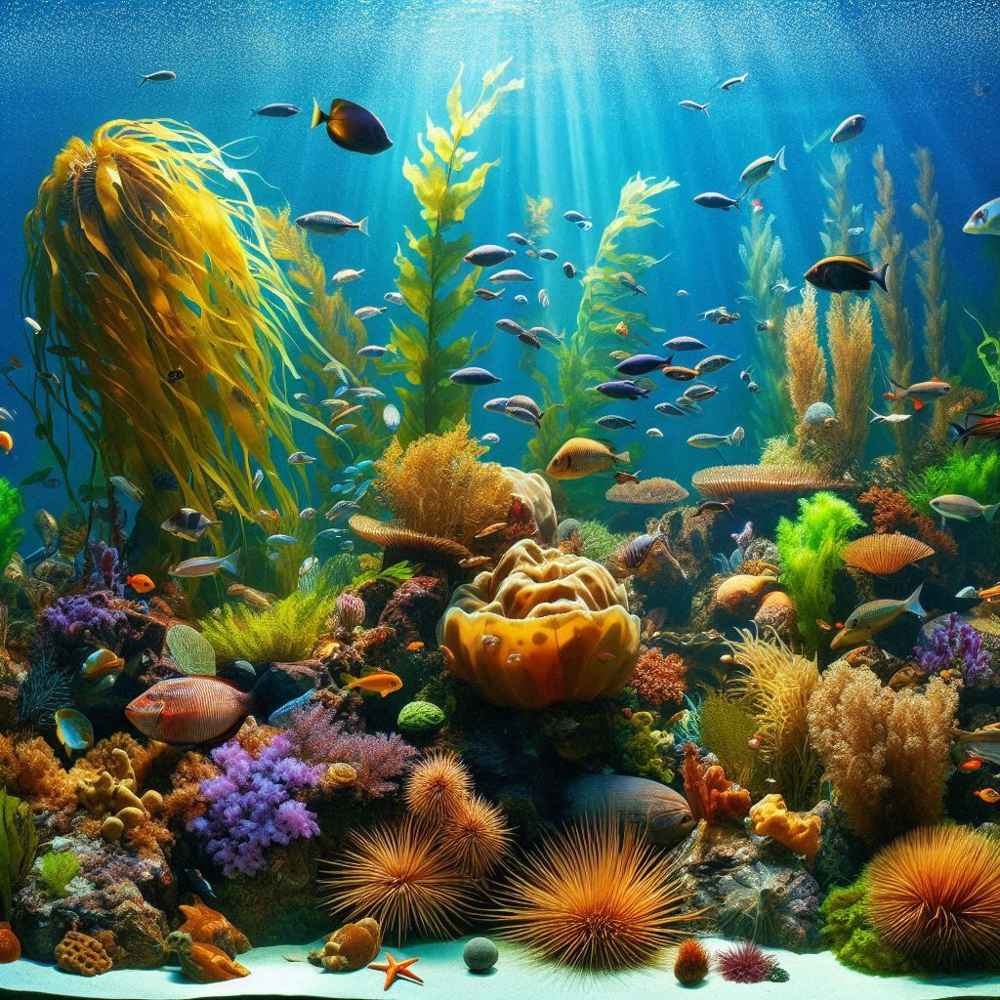
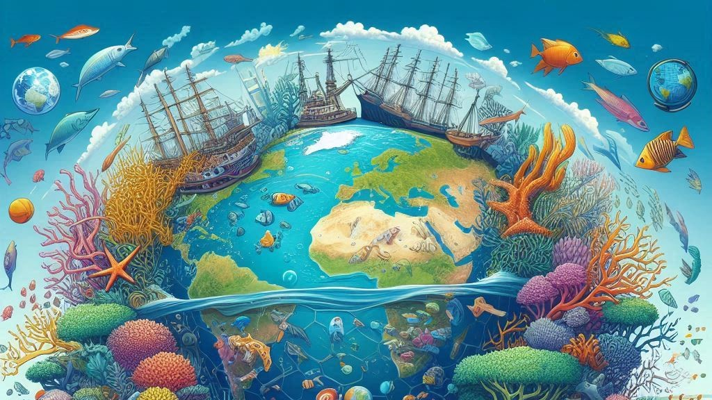
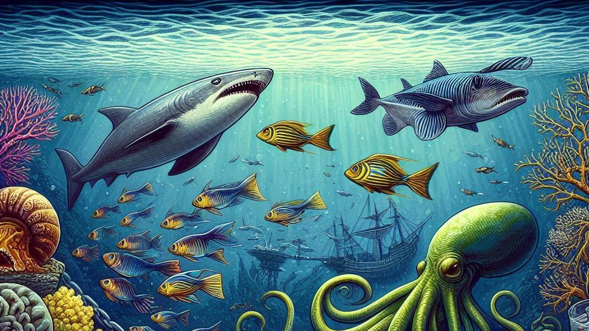

What are Marine Ecosystems ?
Marine ecosystems are vast, ever-changing worlds filled with life, mystery, and breathtaking beauty.
They encompass the deep, shadowy
trenches of the ocean where monstrous creatures roam, the sparkling coral reefs bursting with color, and
the sunlit coastal waters that cradle life
at the boundary between land and sea. Unlike freshwater ecosystems, marine environments are shaped by
powerful tides, shifting currents,
and the salt-laden embrace of the sea, creating conditions that nurture an extraordinary array of
organisms.
These ecosystems are not just vital for marine life, they regulate Earth’s climate, generate oxygen, and
absorb carbon dioxide,
acting as the planet’s life-support system. From the microscopic plankton drifting unseen in the
currents to the mighty whales that glide through the depths,
marine ecosystems are the foundation of an intricate web of life, sustaining creatures both beneath the
waves and far beyond the shores.

Types of Marine Ecosystems
The marine world is incredibly diverse, home to a variety of ecosystems,
each teeming with unique life forms and playing a crucial role in the ocean’s delicate balance.
🐳Oceans – The Endless Blue
The vast, open ocean stretches across the Earth like an unbroken sapphire sheet,
covering over 70% of the planet’s surface. It is divided into different layers—each an entirely
different world.
The sunlit surface shimmers with schooling fish, playful dolphins, and soaring seabirds, while deeper
down, darkness rules,
hiding bizarre creatures like the glowing anglerfish and giant squid.
🪸Coral Reefs – The Underwater Cities
Often called the "rainforests of the sea," coral reefs are dazzling, bustling underwater metropolises
built by tiny coral polyps over centuries.
In these vivid ecosystems, sea turtles glide gracefully between intricate coral structures, clownfish
dart among anemones,
and reef sharks patrol the waters, maintaining the delicate balance of life.
🌊Estuaries – The Cradle of the Sea
Where freshwater rivers meet the salty embrace of the ocean, estuaries emerge as rich, nurturing
habitats.
These brackish waters are bustling nurseries where baby fish, shrimp, and crabs find shelter before
venturing into the open sea.
The mix of salt and freshwater creates an environment brimming with nutrients, making estuaries one of
the most productive ecosystems on Earth.
🌱Mangrove Forests – Guardians of the Shore
With their gnarled roots rising from the water like ancient sentinels, mangrove forests thrive along
tropical coastlines,
shielding land from erosion and storms. These salt-tolerant trees form dense, tangled forests that serve
as hiding places for young marine creatures,
from tiny fish to wading birds, and even endangered species like sea turtles and manatees.
🪼Deep-Sea Ecosystems – The Twilight Abyss
Beyond the reach of sunlight, where the pressure could crush a human in an instant, the deep-sea world
is a realm of mystery.
Here, creatures like the ghostly gulper eel and bioluminescent jellyfish float through the blackness,
while colossal tube worms cluster around hydrothermal vents, drawing energy not from the sun, but from
Earth’s fiery core.
Each of these ecosystems is a world within a world, filled with life, struggle, and survival, all
connected in a delicate balance that keeps the ocean alive.

Importance of Marine Ecosystems
Marine ecosystems are more than just breathtaking landscapes beneath the waves—they are the very
heartbeat of our planet.
Their importance is woven into every aspect of life on Earth:
🌏The Planet's Breath
Marine ecosystems produce over 50% of the oxygen we breathe. Tiny,
invisible phytoplankton floating on the ocean’s surface absorb sunlight and carbon dioxide,
releasing oxygen into the air. Without these microscopic life forms, life as we know it would not exist
❄️A Climate Regulator
The ocean is like Earth’s air conditioner—it absorbs vast amounts of heat and carbon dioxide,
helping to regulate global temperatures. However, as climate change accelerates, the delicate balance of
this system is at risk,
leading to rising sea levels, stronger storms, and shifts in marine life.
🍽️A Source of Life and Livelihood
For billions of people, the ocean provides food, jobs, and economic stability.
From the bustling fish markets of coastal towns to deep-sea fisheries supplying the world,
marine ecosystems are the backbone of global food security. Additionally, marine-derived compounds are
being researched for life-saving medicines,
including cancer treatments and antibiotics.
🏝️Nature’s Shield
Coastal ecosystems like coral reefs, mangroves, and seagrass meadows act as natural barriers, protecting
shorelines from erosion,
storm surges, and tsunamis. Without them, coastal communities would be far more vulnerable to the forces
of nature.
Despite their immense importance, marine ecosystems face growing threats from overfishing, pollution,
and climate change.
Their health is our health, making conservation efforts more urgent than ever.

Marine Food Chains and Webs
Beneath the rolling waves, an intricate dance of life and survival plays out in the form of marine food
chains and webs.
🔆The Sunlit Foundation – Producers
At the base of the marine food chain are the producers, microscopic phytoplankton that float freely in
the water,
absorbing sunlight and using photosynthesis to create energy.
These tiny plants are the primary source of food for countless marine creatures and serve as the
backbone of the ocean’s ecosystem
🦐The Grazers – Primary Consumers
Small, drifting creatures known as zooplankton feast on phytoplankton,
converting their energy into a form usable by larger animals. Small fish, shrimp, and krill also belong
to this level,
forming a crucial link between the microscopic world and the larger predators.
🦑The Predators – Secondary Consumers
Fast-swimming fish like mackerel, squid, and jellyfish prey on smaller organisms, keeping populations
balanced.
They are the bridge between the tiny grazers and the ocean’s top hunters.
🦈The Ocean’s Apex Predators
At the peak of the food web, formidable creatures such as sharks, orcas, and giant squid reign supreme.
These top predators keep marine populations in check, preventing any one species from overpopulating and
disrupting the ecosystem.
🌐The Web of Life
Unlike simple food chains, marine ecosystems form intricate food webs, where multiple species interact
in complex ways.
A single fish may be prey to different predators at different life stages, and a decline in one
species—caused by overfishing
or habitat destruction—can send ripples throughout the entire ecosystem
This fragile balance is what keeps the ocean alive, making every creature—from the tiniest
plankton to the largest whale—an essential part of this vast, interconnected world.
